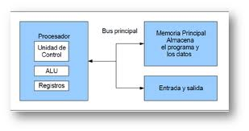
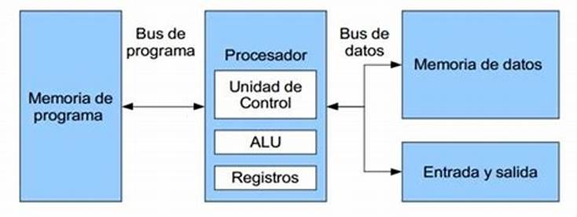

Arquitectura Mauchly-Eckert (Von Newman)
Esta arquitectura fue utilizada en la computadora ENIAC. Consiste en una unidad central de
proceso que se comunica a través de un solo bus con un banco de memoria en donde
se almacenan tanto los códigos de instrucción del programa, como los datos
que serán procesados por este.
Ejemplo de esta versatilidad es el funcionamiento de los compiladores, los cuales son
programas que toman como entrada un archivo de texto conteniendo código fuente y
generan como datos de salida, el código máquina que corresponde a dicho
código fuente (Son programas que crean o modifican otros programas).
Desventajas:
Es que el bus de datos y direcciones único se convierte en un cuello de botella por
el cual debe pasar toda la información que se lee de o se escribe a la memoria,
obligando a que todos los accesos a esta sean secuenciales.

Arquitectura Harvard
Esta arquitectura surgió en la universidad del mismo nombre, poco después de
que la arquitectura Von Newman apareciera en la universidad de Princeton. Al igual que en la
arquitectura Von Newman, el programa se almacena como un código numérico en
la memoria, pero no en el mismo espacio de memoria ni en el mismo formato que los datos.
Por ejemplo, se pueden almacenar las instrucciones en doce bits en la memoria de programa,
mientras los datos de almacenan en ocho bits en una memoria aparte.
